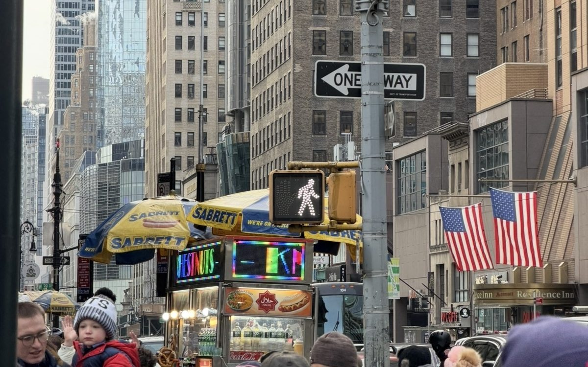
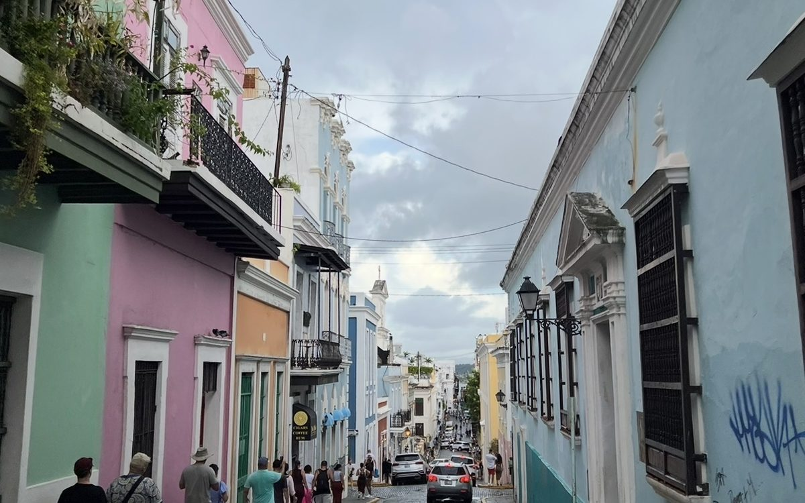
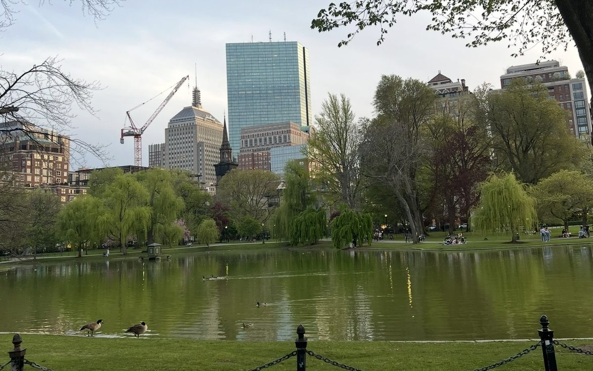

Projects
-

NYC Everyday Access
Urban equity
Short description goes here
-
Frontier industries in Glasgow City Region
Local economy
Analyzes UK local authority data to identify frontier industries in the Glasgow City Region, using spatial analysis, location quotients and elastic net modeling, and provides policy recommendations.
-

Building Back, Pushing Out: How Climate Adaptation Drives Displacement in Puerto Rico
Climate and Displacement
A case study of Rincón examining how climate adaptation efforts have displaced residents, supported by Census data on poverty, language and education.
-
A Disconnected T
Transportation equity
Examines whether Bostonians have equitable access to the T, and finds racial and socioeconomic divides in who can reach it.
-

Boston's Rampant Rodents
Neighborhood inequality
Analyzes rodent sighting data across Boston to see whether infestation varies by neighborhood race and income.
-
A Hidden Threat?
Public health
Tests whether radiation from Hiroshima and Fukushima Dai-ichi has reduced life expectancy in Japan, and finds no significant decrease, though some patterns merit further study.